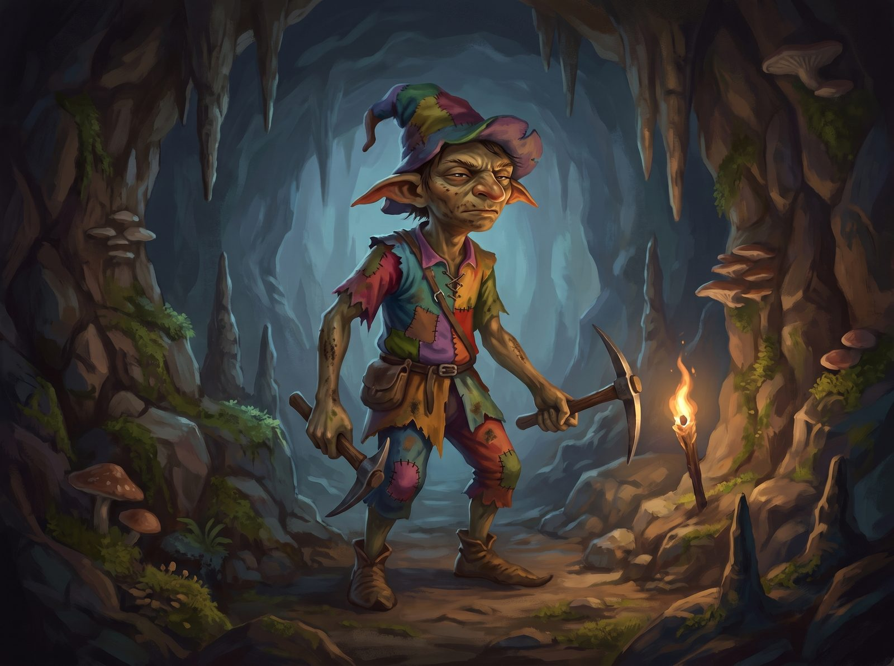

Skills
- Dodge: 1 (BODY 1 + Athletics 5 + 1 = 7)
- Hide: 1 (BODY 1 + Athletics 5 + 1 = 7)
- Move Quietly: 1 (BODY 1 + Athletics 5 + 1 = 7)
- Any weapon (as the weapon)
Weapons
| Weapon | Skill | Init | Off | Def | Dam | Range |
|---|---|---|---|---|---|---|
| Unarmed | 4 | 15 | 2 | 1 | -3 | - |
Typical specimen. Off/Def/Dam totals include the modifiers; Dam adds DB unless fixed.
Physical description
Goblins are small humanoids with exceptionally good senses. They are very sensitive to bright light (-3 to most skills in bright sunlight). They get no penalties in twilight, torchlight or moonlight and their vision in starlight is the same as for humans in moonlight. Although they look slender, they are as strong as humans. Goblins are very dextrous but they have a strong right hand preference.
Clothing
Goblins usually wear all sorts of weird clothes. Various shapes, bright colors and funny hats but not always clean and shiny as they live beneath the earth.
Social structure
Most groups live in caves beneath the surface of the earth. The groups have 20 members or more with families like humans. Goblins have no set rank systems and are much less organized than humans.
Occupations
Goblins hunt in groups by night. Many goblins are kept busy digging caves while others take care of the food supply. Female goblins help to supply food by gathering edible plants. In their spare time goblins amuse themselves by dancing, singing and playing instruments, many of which are unknown to humans.
Special skills
Goblins are good miners and those who are trained as hunters will have hunting skills. Most goblins are good dancers and musicians. They hate swimming.
Mental description
Goblins are mischievous by nature. They love the dark side of practical jokes. They are very importunate but not to the danger of their lives. They will fight any trespassers, protecting their families to the death if necessary. Goblins stay away from anything connected to light and sunshine.